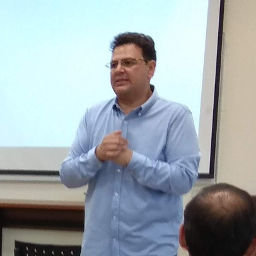

El fenómeno de la corrupción desde una perspectiva legislativo-trasnacional

Sergio Díaz Rendón
Lic. Sergio Díaz Rendón Licenciado en Derecho por la Facultad de Derecho de la Universidad Nacional Autónoma de México (UNAM). Máster en Estudios Avanzados en Derechos Humanos por la Universidad Carlos III de Madrid. Maestro en Derecho por la Facultad de Jurisprudencia de la Universidad Autónoma de Coahuila. Doctor en Derechos Humanos por la Universidad Carlos III de Madrid (UC3M), mediante la defensa de la tesis intitulada: "La laicidad como límite a la libertad de expresión en las campañas político-electorales en México" obteniendo la calificación Sobresaliente con mención de Cum Laude.
Cuenta con 17 años de experiencia docente y 20 como profesionista. Actualmente se desempeña como director del Centro de Posgrado y Capacitación de la Academia Interamericana de Derechos Humanos de la Universidad Autónoma de Coahuila y como Profesor de Tiempo Completo.
Es autor del libro Laicidad: Concepto, origen y perspectivas histórica y contemporánea en México editado por Tirant Lo Blanch y de diversos capítulos en obras colectivas en materia de derechos humanos.
Desde enero del 2017, pertenece al Sistema Nacional de Investigadores del Consejo Nacional de Ciencia y Tecnología (CONACYT) Nivel 1.